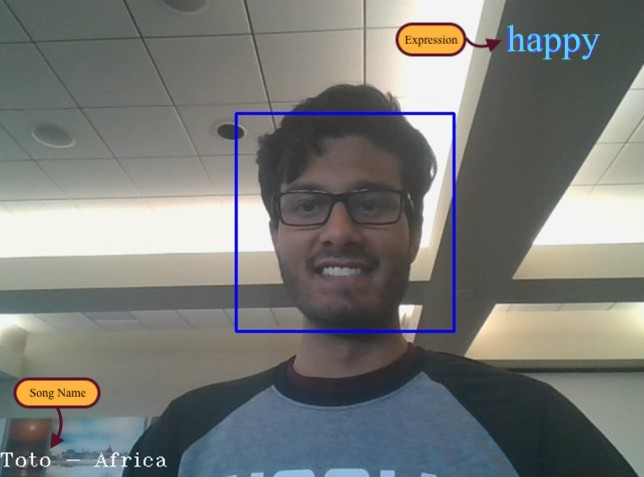

LANGUAGE Python
TIME Hack Mobile - Hackathon, July 2019
DESCRIPTION
A python application which plays a certain type of music based on user's emotion.
-
The goal of this application is to help users enhance their mood by playing a certain type of music/joke when they are alone or driving.
-
Detects user's facial expressions to track their current mood. Based on their mood, it plays a certain type of music to calm them down. The ultimate goal is to avoid chances of road rage by keeping the surrounding environment to the user's liking.
-
Used OpenCV library to detect live frame of the user's frontal face. This frame is passed to the pre-learned tensorflow model, to figure out the user's mood. This information is continuously tracked to gauge a better understanding of user's emotion. Based on the data gathered, specific type of music/joke is played to lighten user's mood.

Facial expression and current name of the song is displayed. While the current song is playing, the application gathers data about user's overall mood to select an appropriate preceding song.
NOTE: Yellow text boxes are not part of the demo.